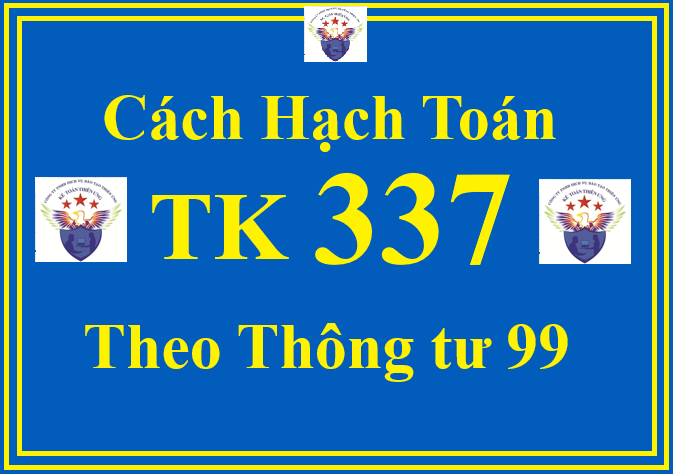

Hướng dẫn cách định khoản hạch toán TK 337 - Thanh toán theo tiến độ hợp đồng xây dựng theo Thông tư 99/2025/TT-BTC hướng dẫn Chế độ kế toán doanh nghiệp (áp dụng từ ngày 01/01/2026)
1. Nguyên tắc kế toán TK 337 theo Thông tư 99/2025/TT-BTC
a) Tài khoản này dùng để phản ánh số tiền khách hàng phải trả theo tiến độ kế hoạch và số tiền phải thu theo doanh thu tương ứng với phần công việc đã hoàn thành do nhà thầu tự xác định của hợp đồng xây dựng dở dang.
b) Tài khoản này chỉ áp dụng đối với trường hợp hợp đồng xây dựng quy định nhà thầu được thanh toán theo tiến độ kế hoạch, không áp dụng đối với trường hợp hợp đồng xây dựng quy định nhà thầu được thanh toán theo giá trị khối lượng thực hiện được khách hàng xác nhận.
c) Căn cứ để ghi vào bên Nợ Tài khoản 337 là chứng từ xác định doanh thu tương ứng với phần công việc đã hoàn thành trong kỳ (không phải hóa đơn) do nhà thầu tự lập, không phải chờ khách hàng xác nhận. Nhà thầu phải lựa chọn phương pháp xác định phần công việc đã hoàn thành và giao trách nhiệm cho các bộ phận liên quan xác định giá trị phần công việc đã hoàn thành và lập chứng từ phản ánh doanh thu hợp đồng xây dựng trong kỳ.
Căn cứ để ghi vào bên Có Tài khoản 337 là hóa đơn được lập trên cơ sở tiến độ thanh toán theo kế hoạch đã được quy định trong hợp đồng. Số tiền ghi trên hóa đơn là căn cứ để ghi nhận số tiền nhà thầu phải thu của khách hàng, không là căn cứ để ghi nhận doanh thu trong kỳ kế toán.
d) Tài khoản 337 phải được theo dõi chi tiết theo từng hợp đồng xây dựng.
2. Kết cấu và nội dung phản ánh của Tài khoản 337 - Thanh toán theo tiến độ hợp đồng xây dựng theo Thông tư 99/2025/TT-BTC
| Bên Nợ: | Bên Có: |
| Phản ánh số tiền phải thu theo doanh thu đã ghi nhận tương ứng với phần công việc đã hoàn thành của hợp đồng xây dựng dở dang. |
Phản ánh số tiền khách hàng phải trả theo tiến độ kế hoạch của hợp đồng xây dựng dở dang.
|
|
Số dư bên Nợ:
Phản ánh số tiền chênh lệch giữa doanh thu đã ghi nhận của hợp đồng lớn hơn số tiền khách hàng phải trả theo tiến độ kế hoạch của hợp đồng xây dựng dở dang.
|
Số dư bên Có:
Phản ánh số tiền chênh lệch giữa doanh thu đã ghi nhận của hợp đồng nhỏ hơn số tiền khách hàng phải trả theo tiến độ kế hoạch của hợp đồng xây dựng dở dang.
|
3. Cách định khoản hạch toán TK 337 - Thanh toán theo tiến độ hợp đồng xây dựng theo Thông tư 99/2025/TT-BTC
a) Trường hợp hợp đồng xây dựng quy định nhà thầu được thanh toán theo tiến độ, khi kết quả thực hiện hợp đồng xây dựng được ước tính một cách đáng tin cậy, thì kế toán căn cứ vào chứng từ phản ánh doanh thu tương ứng với phần công việc đã hoàn thành (không phải hóa đơn) do nhà thầu tự xác định, ghi:
Nợ TK 337 - Thanh toán theo tiến độ hợp đồng xây dựng
Có TK 511 - Doanh thu bán hàng và cung cấp dịch vụ.
b) Căn cứ vào hóa đơn được lập theo tiến độ để phản ánh số tiền phải thu theo tiến độ đã ghi trong hợp đồng, ghi:

Nợ TK 131 - Phải thu của khách hàng
Có TK 337 - Thanh toán theo tiến độ hợp đồng xây dựng
Có TK 3331 - Thuế GTGT phải nộp.
c) Khi nhà thầu nhận được tiền của khách hàng thanh toán, ghi:
Nợ các TK 111, 112
Có TK 131 - Phải thu của khách hàng.